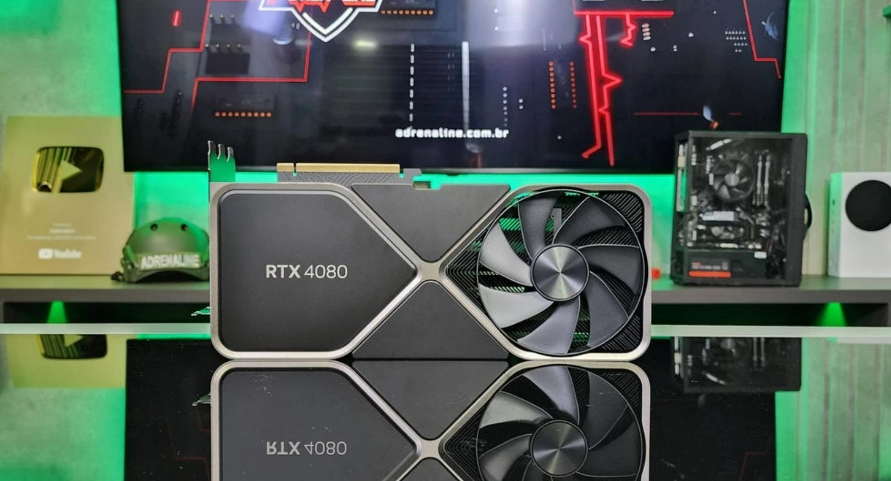
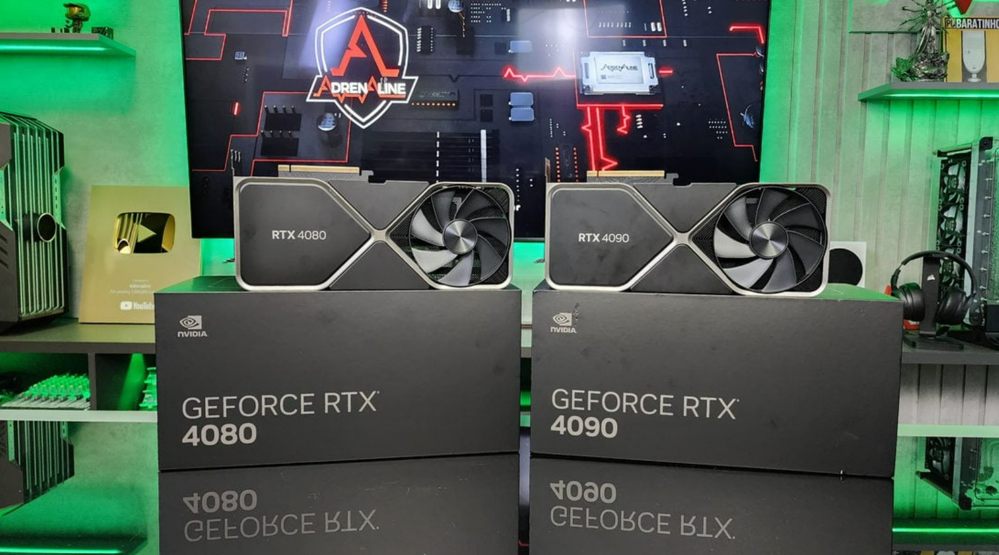
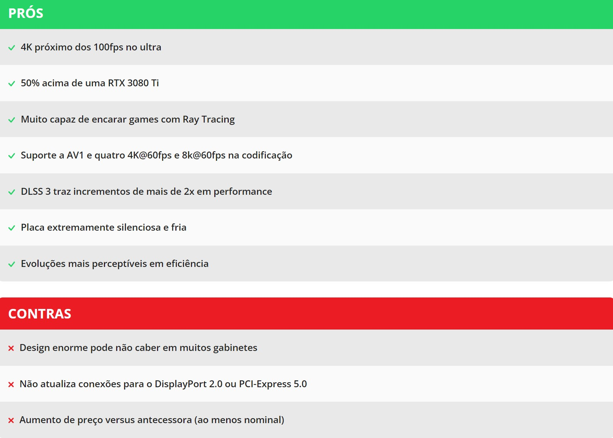

Introdução
A GeForce RTX 4080 já “nasceu com uma treta”: sua nomenclatura. Originalmente existiriam dois modelos, um com 16GB (o que é analisado nesta review) e um de 12GB. Porém após uma repercussão bastante negativa devido as grandes diferenças entre dois modelos com nome muito parecido, a Nvidia puxou o plugue da RTX 4080 12GB e inaugurou a era dos deslançamentos de placas de vídeo. Isso, aliado a necessidade da Nvidia de não canibalizar em excesso os ainda existentes estoques das RTX 30, criou um cenário de escalda de preços.
Enquanto a RTX 4090 chegou para bater a 3090 Ti (custando menos), a GeForce RTX 4080 chega para entregar o dobro de performance que a RTX 3080 Ti, mas custando os mesmos US$ 1.199, sendo que no Brasil seu preço sugerido pela Nvidia é de R$ 11 mil. Isso coloca ela bem acima do melhor produto atualmente da AMD, a Radeon RX 6950 XT (R$ 6 mil), e acima até da recém anunciada Radeon RX 7900 XTX, que foi apresentada com um ganho de 50% sobre a geração anterior e tem preço sugerido de US$ 999.
A RTX 4080
A GeForce RTX 4080 é baseada no chip AD103, com reduções comparado ao que está disponível na topo de linha RTX 4090 e seu chip AD102. São 76 SMs, com um total de 9728 unidades CUDA (na RTX 4090 são mais de 16 mil núcleos CUDA). Em estruturas, como núcleos CUDA, núcleos RT e núlcoes tensores, ela fica entre o disponível na RTX 3080 Ti e RTX 3080, porém com os saltos de performance disponíveis na microarquitetura Ada Lovelace.
Entre essas estruturas, porém, há uma mudança relevante: a quantidade de cache nível 2 (L2 cache). Assim como a RTX 4090, a RTX 4080 tem muito mais dessa memória bastante rápida e próxima do chip gráfico, o que traz incrementos relevantes em latência e, por consequência, em performance. Enquanto a RTX 3080 Ti trazia aproximadamente 6MB de L2 cache, esse valor sobe para 65MB na RTX 4080.
Na parte da eficiência energética, assim como a RTX 4090, a 4080 aumentou a demanda de energia comparada com a sua sucessora homônima da linha 80, mas como o comparativo feito pela Nvidia é feito com a RTX 3080 Ti, temos números positivos. O total de energia da placa de uma RTX 3080 Ti é de 350W, enquanto esse valor é reduzido para 320W na RTX 4080. Como a Nvidia promete o dobro de performance nesse modelo, temos um salto superior a 2x na eficiência energética, por consequência.
As memórias seguem sendo as GDDR6X, desenvolvidas com a Micron e que entregam o dobro de dados por pulso de comunicação, possibilitando larguras de banda suficientes para encarar texturas em 4K ou resoluções superiores. A diferença é uma redução dos 24GB presentes na RTX 4090 para um total de 16GB, mais que suficientes para encarar o 4K e até mesmo lidar com eventuais games em 8K, usando o DLSS para “aliviar as coisas”.
Conclusão
A Nvidia fez um reposicionamento de sua linha para tentar aumentar a longevidade dos produtos da série RTX 30 ainda disponíveis, e o jeito de fazer isso acontecer foi lançara as novas placas com um posicionamento acima das antecessoras. Na RTX 4090 isso não foi tão sensível, já que ela ficou “só” 100 dólares mais cara que a antecessora e conseguiu bater facilmente até a bem mais cara RTX 3090 Ti. Mas a RTX 4080 escancara muito esse incremento, com preço quase 50% maior que sua antecessora da linha 80.
A RTX 4080 mostra mais claramente o incremento de preços da geração 30 para a 40. Mas o salto em performance torna ela uma sucessora, na verdade, da RTX 3080 Ti.
Mas o que salva o dia para a RTX 4080 é que a Nvidia também trouxe um incremento enorme de performance, grande o bastante para viabilizar o seu reposicionamento: versus uma RTX 3080 Ti ela abre respeitáveis 50% de vantagem em 4K em múltiplos games. Até a RTX 3090 Ti fica pra trás, com uma vantagem de uns quase 20% para a RTX 4080. Mas é bom também lembrar que esse incremento de preço faz com que a RTX 4080 tenha o mesmo preço de lançamento da RTX 3080 Ti, tornado essa placa “não Ti” na virtual sucessora da versão Ti das RTX 3080.
O detrimento em performance comparado com a RTX 4090 é bastante grande. Quando a gente escapa do gargalo de CPU, algo que vai acontecer na resolução 4K ou superiores de forma mais clara, vemos diferenças que superam 30%. Isso é muita coisa, e pode fazer com que a galera com mais poder aquisitivo, e capaz do tipo de investimento alto que essas placas demandam, talvez não deva parar na 4080 e ir direto pra 4090. R$ 3 mil a mais é muito dinheiro, mas estamos em um segmento de placas que custam R$ 11 mil e R$ 14 mil, então é bom recalibrar o conceito de custo por aqui.
A grande diferença de performance pode fazer com que, nessa geração, as placas 90 façam mais sentido que os modelos 80.
Ver uma placa da série 90 fazendo algum sentido versus a série 80 é mais um sintoma de como realmente as coisas mudaram nessa geração, com esse reposicionamento focando em não canibalizar as RTX 30, e como também a RTX 4080 12GB era necessária para tentar não tornar a série 80 tão menos interessante nessa geração. Sem ela, temos pela primeira vez um cenário em que a série 90 pode ser uma opção realmente mais vantajosa até na relação entre custo e performance, algo que não acontecia em gerações anteriores, devido a combinação de custo muito alto da série 80 e performance muito maior da série 90.
A RTX 4080 começa a mostrar mais claramente a evolução da microarquitetura Lovelace quando o assunto é eficiência energética. A RTX 4090 entrega muito mais performance, mas ainda é uma placa de alto consumo, ficando no patamar da RTX 3090 Ti e nesse mundo dos 450W. A RTX 4080 reduz isso não apenas para os mais sensatos 320W de TGP como, na prática, consome ainda menos. Ela tem um consumo perceptivelmente menor que a RTX 3080 Ti, entregando os ganhos de 50% em performance. Pena ver que isso não fez a RTX 4080 escapar das inconveniências de um projeto Founders gigantesco ou mesmo usar a tradicional configuração de apenas dois conectores de energia, já que eles não cumprem os 320W. Na série 40, a Nvidia parece ter abraçado o conceito de mais consumo e hardwares maiores, em uma contramão de muito que nós entendemos como evolução de tecnologias.
Nos testes fica claro o potencial do DLSS 3 nos dois títulos que testamos. Microsoft Flight Simulator 2020 rodava na casa dos 50fps em 4K nativo, subindo para 90fps com o DLSS em modo performance. Essa taxa de 90fps se mostrou o teto de nossa performance, já que mesmo reduzindo resolução, o processador não dá conta de ir além. Ligar o recurso do Frame Generation entrega impressionantes 140fps em média, representando um incremento de quase 3x sobre o game rodando nativamente e conseguindo até resolver o gargalo de CPU e possibilitando níveis de performance novos no jogo. Apesar de apresentar alguns artefatos eventuais, o DLSS com Frame Generation é um recurso com bastante potencial, especialmente em games problemáticos com gargalo de processador como o MSF 2020.
Por fim, a RTX 4080 não é um lançamento ruim. Entrega 20% mais performance que uma RTX 3090 Ti custando uns R$ 3.000 a menos, e entrega 50% pelo mesmo valor que o cobrado na RTX 3080 Ti. Mas esse reposicionamento de preços impediu um salto ainda maior nessa relação, como aconteceu na série RTX 30 com a RTX 3080. Outro problema que essa placa pode encarar devido a relação entre custo e performance é a Radeon RX 7900 XTX. Ela vem com preço sugerido 200 dólares abaixo, e só vai depender de um desempenho competitivo para virar “uma pedra no sapato” dessa RTX 4080. Mas isso são cenas de capítulos futuros.
